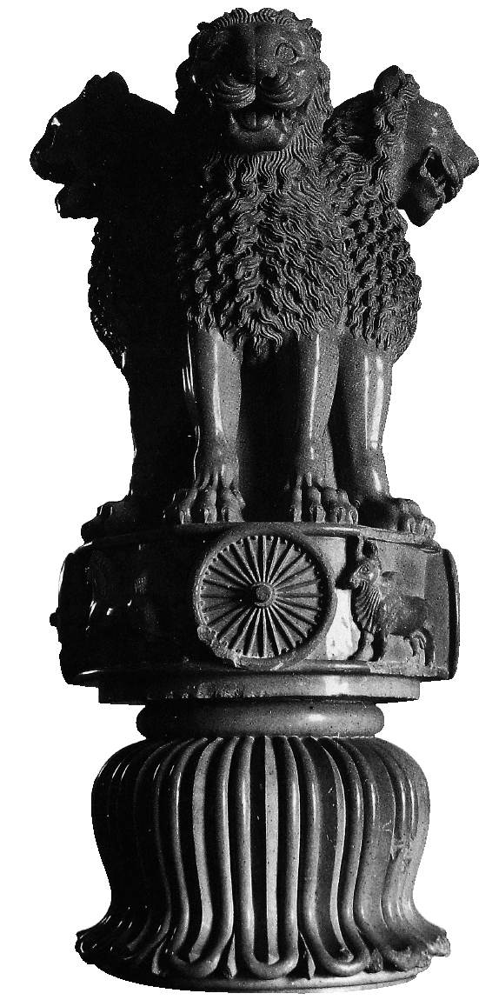

从宗教运动转向政治发展，一个突出的事件是印度出现了第一个帝国——孔雀帝国。如本章前面所述，当雅利安人迁居恒河流域时，也就把重心转移到该地区，特别是转移到该地区的摩揭陀王国。当时，西北地区正独自行动，凭借同波斯文明的密切联系而与印度其他地区相分离。实际上，约公元前518年时，大流士皇帝已越过兴都库什山脉，使旁遮普西部成为其帝国的第二十个行省。两个世纪后，也就是公元前327年，亚历山大大帝也从西北部侵入印度。但是，他在印度仅待了两年，在他离开后不久，希腊人在旁遮普的统治就结束了。尽管亚历山大在印度待的时间不长，但他对印度确实有相当大的影响。
其中一个影响是，使从印度西北部经阿富汗和伊朗，然后通达小亚细亚和地中海东部诸港的东西向贸易迅速发展。亚历山大在整个中东建立的希腊殖民地无疑也为这一贸易做出巨大贡献。亚历山大之后的希腊化国家促进这一贸易达200年之久。
对印度历史来说，最重要的是亚历山大在印度西北部废除当地的几个王国和共和国、造成政治真空地带方面所起的作用。旃陀罗笈多·孔雀迅速填补这一真空，建立了以他名字命名的帝国。公元前320年，旃陀罗笈多还是一位野心勃勃的青年将领，他夺取了摩揭陀国难陀王朝的王位，建立了他自己的王朝。在以后几年里，他稳步地朝西北方向扩大自己的统治，直到他的帝国从恒河流域扩展到印度河流域，并包括这两条大河的三角洲地区。与此同时，他还组织了一支强大的军队和一个有效的政府来维持他的国土。因而，当塞琉古作为亚历山大的继承人之一而当上中东的国王，并试图重新获得亚历山大的印度地区时，旃陀罗笈多毫不费力地击退了希腊军队。

图54 在萨尔纳特出土的阿育王圆柱上的狮形柱头。这是阿育王（公元前273——前232年）朝代的作品，是这位孔雀帝国的统治者为纪念佛陀而下令竖立的许多石柱中的一个，现陈列于新德里博物馆。
旃陀罗笈多的儿子征服了南部的德干地区，而他的孙子，著名的阿育王（公元前273——前232年）则征服了羯陵伽，即印度东部。因而，阿育王统治下的孔雀帝国包括了除南端以外的整个印度半岛。
孔雀王朝统治下的印度十分富裕，且得到很好的治理，就像处于鼎盛时期的罗马帝国一样。许多驿道上，成群的商人、士兵和王室信使往来不绝。对东海岸羯陵伽的征服促进了贸易，所以专门成立一个海事部来维护航道和港口。首都华氏城被称为“花城”，因它的公园、公共建筑物和9英里多长的河边绿地而闻名于世。它的一些学校里挤满了来自帝国各地和国外的学生。
所有这一切全靠“国王提取的六分之一”的收成来供养，不过，国王提取的收成实际上常提高到四分之一，留给农民的仅够维持生存。法律是严厉的，维持秩序的手段也是无情的。军队号称有70万人，配备9000头大象和1万辆战车。精干的密探无处不在，通过信使和信鸽将一连串的报告送交首都。严酷的刑罚常被用作惩罚和逼供的手段。总而言之，这是一个高效率的、严厉的、官僚政治的社会，充分体现了考底利耶所说的名言：“政治学是一门关于惩罚的科学。”
阿育王的统治根本不同于这种传统型的帝国统治。他在通过特别残忍的战争征服羯陵伽王国之后，内心经历了一番变化。他自己描述道，看到十多万名俘虏被杀死，他感到“深深的悲伤和悔恨”。从此以后，阿育王设法实行佛陀的温和的教义。他以佛教信条为根据颁布敕令；这些佛教信条是：朴素、同情、相互宽容和尊重各类生命。他下令兴办了许多对他的人民而不是对他的政府有好处的公共事业——医院和国家公费医疗，驿道两旁的果园和休息场所，分配施舍物给各个教派，派佛教传教团去外国。
阿育王并没有使佛教成为国教，也没有迫害其他教派。相反，他对任何教派的杰出人士都予以帮助。这不是宗教信仰的改变，而是一般态度的改变。他最强调的是宽容和非暴力主义，不仅因为这两者是道德上合乎需要的东西，而且因为它们会促进他那庞大且复杂的帝国的和谐。这种态度在阿育王统治期间被证明是很成功的，因为他在民众的欢呼声中统治了长达41年的时间。但是，在他去世后的半个世纪里，他的王朝被推翻，他的帝国被毁灭。
这已成为到现代为止的印度历史的一个模式。印度与中国不同，在中国，是长期的帝国统一间隔以短暂的分裂；而在印度，则恰恰相反——是短暂的统一和长期的分裂。这并不是说印度就没有统一。印度有统一，但这是文化的而不是政治的。印度文化强调的是忠于社会秩序而不是忠于国家，正如种姓等级制度的地位高于任何政治制度这一事实所证明的。因而，在一个范围里增进了统一的文化又在另一范围里破坏了统一。